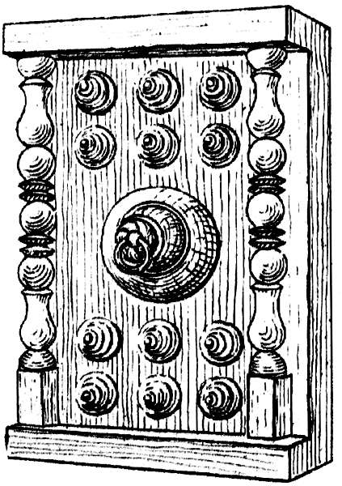
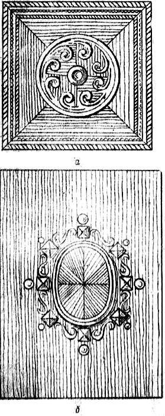
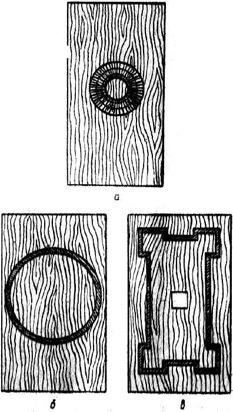

Рельеф и плоскость.

Рельефный орнамент на плоскости обладает наибольшей силой выразительности, так как сочетает в себе объемную, графическую и живописную основы. Объем, собственно рельеф, демонстрирует глубину врезки и тем самым толщину примененного куска древесины. Впечатление создается от добротности и качества материала, а также приложенной к нему работы. Графические элементы присутствуют в виде ясно читаемым контуров и рельефа, а живописная основа связана с чередованием теневых и освещенных частей рельефа. Рельеф, обладая повышенной изобразительностью, всегда становится композиционно главной частью предмета, поэтому очень важно определить главную и второстепенную части такого орнамента.
Рельеф может быть достигнут приемами столярной и токарной обработки, а также работой резчика. При сочетании этих видов работ в одной композиции столярная и токарная части должны занимать второстепенное, подчиненное место, а доминирующую часть композиции следует отдавать резным элементам. Применяя профильные линейные элементы, можно получить рельеф графического характера, соединяя токарные и профильные детали, ввести живописное начало.

Рис. 36. Рельеф из токарных деталей
Рельефные детали обладают наибольшей композиционной силой. При одной и той же площади, занимаемой орнаментом, резная деталь сможет «удержать» при себе значительно большую окружающую ее поверхность по сравнению с плоской. Чтобы создать одинаковое ощущение от богатства композиции, орнамент в технике маркетри, имеющий рисунок по форме, подобный резному, должен быть больше по площади. Связано это с тем обстоятельством, что резьба при любом освещении обладает одинаковой степенью выразительности, а маркетри в бликующем свете может вообще потеряться. Выразительность изображенного на бумаге орнамента в большой степени зависит от приема изображения, принятого контраста линий и тона. Например, четко оконтуренный рисунок маркетри на бумаге, выполненный из близких по тону кусков шпона, в натуре будет невыразительным или малозаметным. То, что смотрится на небольшом листе, может потеряться при переносе в натуре на большую плоскость. В рельефных орнаментах и украшениях значение текстуры и тем самым породы незначительно. Надо придерживаться правила: мелкая и плоская резьба, выполненная на материалах с ярко выраженной текстурой, выглядит хуже, чем выполненная на материалах однородного строения.
Итак, один и тот же рисунок, одно и то же изображение на плоскости или поверхности можно сделать контуром, пятном или рельефом.
При создании композиции на плоскости можно применить любое из упомянутых средств в отдельности или в их сочетании.
По формальным признакам композиция может быть замкнутой, с движением развития внутрь, к центру; раскрытой, с развитием oт центра к периферии; линейной, представляющей собой тем или иным способом скомпонованную полосу. Признак замкнутой композиции – четкий линейный внешний абрис (контур), от которого внутрь с постепенным нарастанием сложности рисунка развивается орнаментальная тема. Как правило, это центрические орнаменты. К замкнутым композициям относятся рамочные и кольцевые орнаменты при условии, что их внешний контур линейный и геометризированный. Влияние замкнутой композиции на остальную часть плоскости минимально.

Рис. 37. Плоскостные композиции: замкнутая (а) и раскрытая (б)
Признак раскрытой композиции – наличие нескольких композиционных узлов меньшей значимости, чем центральный, а также наличие ясно выраженного ритма с убывающим от центра интервалом. Многие полосовые композиции относятся к этому типу. Рамочная или кольцевая композиция при наличии центральной оси, от которой имеется развитие в стороны, также относится к раскрытым. Рамка или кольцо могут иметь главное композиционное значение на плоскости лишь при условии, что внутреннее поле плоскости по своему объему равно или меньше объема рамки. Иначе рамка получит второстепенное значение и при маловыразительном среднем поле плоскость с такой рамкой не будет композиционно завершенной. Исправить этот недостаток можно, обогатив рисунок по углам и осям симметрии или с помощью дополнительной центральной вставки.

Рис. 38. Плоскостные композиции с рамочным декором: а – выразительный прием; б – невыразительный прием; в – обогащение угловых элементов
Композиции по характеру изображения могут быть орнаментальными, сюжетно-орнаментальными и сюжетными. Орнаментальные состоят из системы линий и фигур абстрактной формы, не изображающих реального предмета или мотива, например волнистые или ломаные линии, розетки и т. п. Сюжетно-орнаментальные композиции наряду с геометрической основой включают изображение предметов, наблюдаемых в жизни, например, изображения цветов, плодов. Сюжетные композиции – наиболее сложные, они имеют изображения конкретной действительности: фигуры людей, животных, растения.
Следует иметь в виду, что степень конкретности в изображениях орнаментальной композиции ограничивается требованиями декоративности. Это в особенности касается сюжетных композиций, где главная задача заключается не в передаче состояния, настроения или точного соответствия изображения реальной действительности, а лишь в обогащении и украшении предмета.